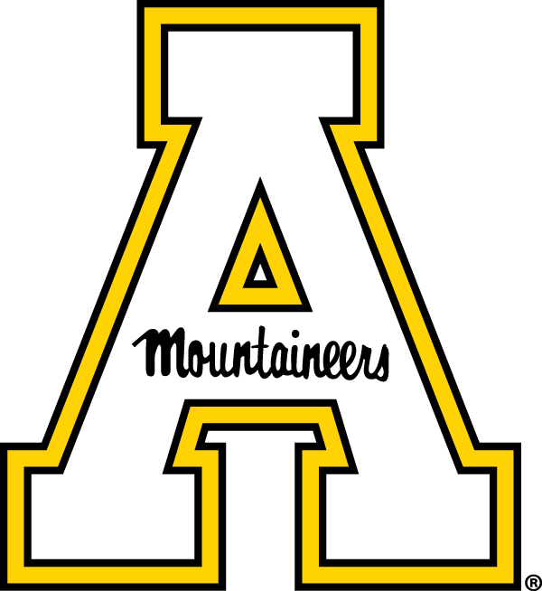

Alaska's Changing Braidplains
NDVI · Glacierization · Watershed land cover
Both regions
Juneau
Denali
Polygon color:
Median NDVI
NDVI trend / year
Glacierized watershed (%) · 2000
Lake outlines:
1984–1988
1997–2001
2007–2011
2016–2019
All surveyed periods
Survey periods represent mapped lake extents, not annual observations.
Loading research polygons…

Research data: Braidplain Master Glacierization · boundaries: project GeoPackages · basemap: OpenStreetMap HOT